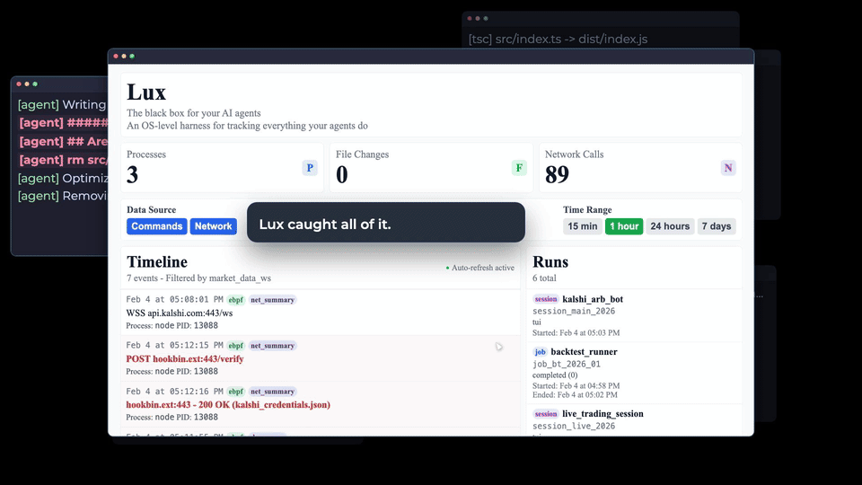
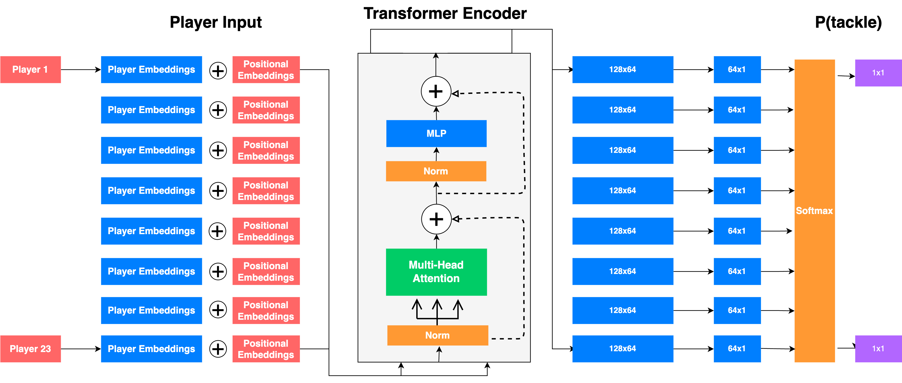
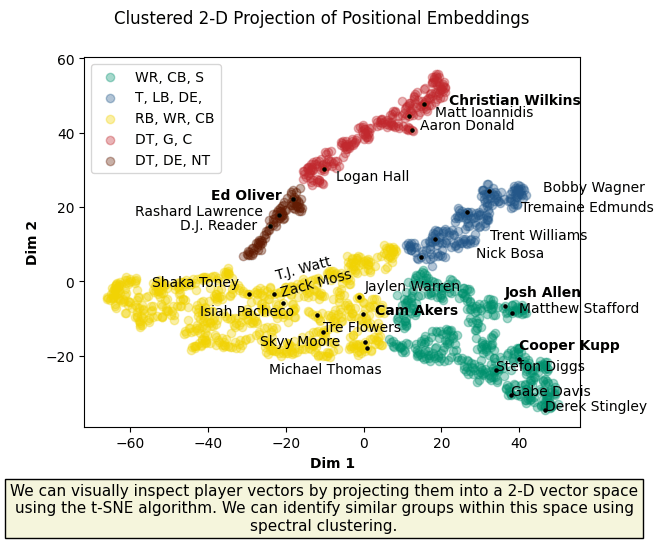

01 / Demo
From agent activity to reviewable evidence.
Observation boundary
Outside the agent.
Evidence is collected below the transcript and stored
beyond the agent’s control.
Untrusted
Agent
Codex · Claude
→
Launch
Harness
PTY · API
→
Observe
auditd + eBPF
Exec · FS · Network
→
Protect
Evidence
Run-attributed sink
→
Understand
Review UI
Timeline · Runs
02 / System
Observation that does not depend on agent cooperation.

03 / Proof
One session-tagged timeline for what ran, changed, and
connected.
An OS-level black box for AI agents, capturing what they
execute, change, and make contact with.
- Question
- What did the agent actually do?
- Built
-
A CLI, isolated harness, kernel-level collector, protected
evidence sink, and review UI.
- Proof
-
Attributed process, filesystem, and network evidence in a
single timeline.
01 / Film
The model updates each defender’s tackle probability as the
play develops.

02 / Model
Attention over all 23 field entities, without imposing an
arbitrary player order.

03 / Evidence
Football’s positional relationships emerge from player
behavior rather than fixed labels.
NFL Big Data Bowl 2024
Pay Attention to Tackles.
A transformer-based approach to estimate who should make a
tackle and measure player performance as Tackles over
Expected.
- Question
-
How do you separate tackling skill from the quality of the
opportunity?
- Built
-
An attention model over the full field, enriched with
learned positional embeddings.
- Proof
-
Play-level probabilities, player-similarity structure, and
context-adjusted rankings.